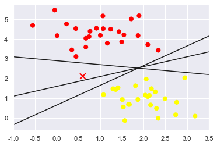
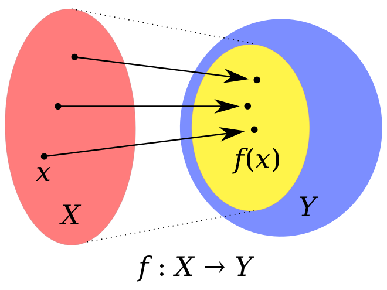

In-Depth: Support Vector Machines¶

This notebook contains an excerpt from the Python Data Science Handbook by Jake VanderPlas; the content is available on GitHub.
The text is released under the CC-BY-NC-ND license, and code is released under the MIT license. If you find this content useful, please consider supporting the work by buying the book!
Support vector machines (SVMs)¶
A particularly powerful and flexible class of supervised algorithms for both classification and regression.
In this section,
To develop the intuition behind support vector machines
To learn about their use in classification problems.
# We begin with the standard imports
%matplotlib inline
import numpy as np
import matplotlib.pyplot as plt
from scipy import stats
# use seaborn plotting defaults
import seaborn as sns; sns.set()
Motivating Support Vector Machines¶
Generative classification
In Depth: Naive Bayes Classification
to probabilistically determine labels for new points.
Discriminative classification
rather than modeling each class, we simply find a line or curve (in two dimensions) or manifold (in multiple dimensions) that divides the classes from each other.
As an example of this, consider the simple case of a classification task, in which the two classes of points are well separated:
from sklearn.datasets import make_blobs
X, y = make_blobs(n_samples=50, centers=2,
random_state=0, cluster_std=0.60)
plt.scatter(X[:, 0], X[:, 1], c=y, s=50, cmap='autumn');
A linear discriminative classifier would attempt to draw a straight line separating the two sets of data, and thereby create a model for classification.
For two dimensional data like that shown here, this is a task we could do by hand.
there is more than one possible dividing line that can perfectly discriminate between the two classes!
We can draw them as follows:
xfit = np.linspace(-1, 3.5)
plt.scatter(X[:, 0], X[:, 1], c=y, s=50, cmap='autumn')
#plt.plot([0.6], [2.1], 'x', color='red', markeredgewidth=2, markersize=10)
for m, b in [(1, 0.65), (0.5, 1.6), (-0.2, 2.9)]:
plt.plot(xfit, m * xfit + b, '-k')
plt.xlim(-1, 3.5);
These are three very different separators which, nevertheless, perfectly discriminate between these samples.
Depending on which you choose, a new data point (e.g., the one marked by the “X” in this plot) will be assigned a different label!

Evidently our simple intuition of “drawing a line between classes” is not enough, and we need to think a bit deeper.
Support Vector Machines: Maximizing the Margin¶
The intuition is this:
rather than simply drawing a zero-width line between the classes, we can draw around each line a margin of some width, up to the nearest point.
Here is an example of how this might look:
xfit = np.linspace(-1, 3.5)
plt.scatter(X[:, 0], X[:, 1], c=y, s=50, cmap='autumn')
for m, b, d in [(1, 0.65, 0.33), (0.5, 1.6, 0.55), (-0.2, 2.9, 0.2)]:
yfit = m * xfit + b
plt.plot(xfit, yfit, '-k')
plt.fill_between(xfit, yfit - d, yfit + d, edgecolor='none',
color='#AAAAAA', alpha=0.4)
plt.xlim(-1, 3.5);
The optimal model is the line that maximizes this margin.
Support vector machines are an example of such a maximum margin estimator.
Fitting a support vector machine¶
We will use Scikit-Learn’s support vector classifier to train an SVM model on this data.
For the time being, we will use a linear kernel and
set the
Cparameter to a very large numberwe’ll discuss the meaning of these in more depth momentarily
from sklearn.svm import SVC # "Support vector classifier"
model = SVC(kernel='linear', C=1E10)
model.fit(X, y)
SVC(C=10000000000.0, break_ties=False, cache_size=200, class_weight=None,
coef0=0.0, decision_function_shape='ovr', degree=3, gamma='scale',
kernel='linear', max_iter=-1, probability=False, random_state=None,
shrinking=True, tol=0.001, verbose=False)
# learn about the parameters of SVC
SVC?
To better visualize what’s happening here, let’s create a quick convenience function that will plot SVM decision boundaries for us:
def plot_svc_decision_function(model, ax=None, plot_support=True):
"""Plot the decision function for a 2D SVC"""
if ax is None:
ax = plt.gca()
xlim = ax.get_xlim()
ylim = ax.get_ylim()
# create grid to evaluate model
x = np.linspace(xlim[0], xlim[1], 30)
y = np.linspace(ylim[0], ylim[1], 30)
Y, X = np.meshgrid(y, x)
xy = np.vstack([X.ravel(), Y.ravel()]).T
P = model.decision_function(xy).reshape(X.shape)
# plot decision boundary and margins
ax.contour(X, Y, P, colors='k',
levels=[-1, 0, 1], alpha=0.5,
linestyles=['--', '-', '--'])
# plot support vectors
if plot_support:
ax.scatter(model.support_vectors_[:, 0],
model.support_vectors_[:, 1],
s=300, linewidth=1,facecolors = 'none', edgecolor="black");
ax.set_xlim(xlim)
ax.set_ylim(ylim)
plt.scatter(X[:, 0], X[:, 1], c=y, s=50, cmap='autumn')
plot_svc_decision_function(model);
This is the dividing line that maximizes the margin between the two sets of points. Notice
A few of the training points just touch the margin:
indicated by the black circles
These points are the pivotal elements of this fit, and are known as the support vectors, and give the algorithm its name.
In Scikit-Learn, the identity of these points are stored in the support_vectors_ attribute of the classifier:
model.support_vectors_
array([[0.44359863, 3.11530945],
[2.33812285, 3.43116792],
[2.06156753, 1.96918596]])
A key to this classifier’s success is that for the fit, only the position of the support vectors matter;
any points further from the margin do not modify the fit!
because these points do not contribute to the loss function used to fit the model,
so their position and number do not matter so long as they do not cross the margin.
We can see this, for example, if we plot the model learned from the first 60 points and first 120 points of this dataset:
def plot_svm(N=10, ax=None):
X, y = make_blobs(n_samples=200, centers=2,
random_state=0, cluster_std=0.60)
X = X[:N]
y = y[:N]
model = SVC(kernel='linear', C=1E10)
model.fit(X, y)
ax = ax or plt.gca()
ax.scatter(X[:, 0], X[:, 1], c=y, s=50, cmap='autumn')
ax.set_xlim(-1, 4)
ax.set_ylim(-1, 6)
plot_svc_decision_function(model, ax)
fig, ax = plt.subplots(1, 2, figsize=(16, 6))
fig.subplots_adjust(left=0.0625, right=0.95, wspace=0.1)
for axi, N in zip(ax, [60, 120]):
plot_svm(N, axi)
axi.set_title('N = {0}'.format(N))
In the right panel, we have doubled the number of training points, but the model has not changed:
the three support vectors from the left panel are still the support vectors from the right panel.
This insensitivity to the exact behavior of distant points is one of the strengths of the SVM model.
If you are running this notebook live, you can use IPython’s interactive widgets to view this feature of the SVM model interactively:
from ipywidgets import interact, fixed
interact(plot_svm, N=(10, 200, 30), ax=fixed(None));
# https://ipywidgets.readthedocs.io/en/latest/examples/Using%20Interact.html
Beyond linear boundaries: Kernel SVM¶
Where SVM becomes extremely powerful is when it is combined with kernels.
We have seen a version of kernels before, in the basis function regressions of In Depth: Linear Regression.
There we projected our data into higher-dimensional space defined by polynomials and Gaussian basis functions,
and thereby were able to fit for nonlinear relationships with a linear classifier.
To motivate the need for kernels, let’s look at some data that is not linearly separable:
from sklearn.datasets import make_circles
X, y = make_circles(100, factor=.1, noise=.1)
clf = SVC(kernel='linear').fit(X, y)
plt.scatter(X[:, 0], X[:, 1], c=y, s=50, cmap='autumn')
plot_svc_decision_function(clf, plot_support=False);

No linear discrimination will ever be able to separate this data.
But we can draw a lesson from the basis function regressions in In Depth: Linear Regression, and
think about how we might project the data into a higher dimension such that a linear separator would be sufficient.
For example, one simple projection we could use would be to compute a radial basis function centered on the middle clump:
(X ** 2)[0]
array([0.14452223, 0.71671155])
(X ** 2)[0].sum()
0.861233779300179
(X ** 2).sum(1)[0]
0.861233779300179
r = np.exp(-(X ** 2).sum(1))
We can visualize this extra data dimension using a three-dimensional plot
if you are running this notebook live, you will be able to use the sliders to rotate the plot:
# plot 3d & interact
from mpl_toolkits import mplot3d
def plot_3D(elev=30, azim=30, X=X, y=y):
fig = plt.figure(figsize=(8, 8))
ax = plt.subplot(projection='3d')
ax.scatter3D(X[:, 0], X[:, 1], r, c=y, s=50, cmap='autumn')
ax.view_init(elev=elev, azim=azim)
ax.set_xlabel('x', fontsize = 16)
ax.set_ylabel('y', fontsize = 16)
ax.set_zlabel('r', fontsize = 16)
interact(plot_3D, elev=(-90, 90, 10), azip=(-180, 180),
X=fixed(X), y=fixed(y));
We can see that with this additional dimension, the data becomes trivially linearly separable,
by drawing a separating plane at, say, r=0.7.
Here we had to choose and carefully tune our projection:
if we had not centered our radial basis function in the right location, we would not have seen such clean, linearly separable results.
To make such a choice is a problem: we would like to somehow automatically find the best basis functions to use.
Strategy¶
To compute a basis function centered at every point in the dataset, and let the SVM algorithm sift through the results.
This type of basis function transformation is known as a kernel transformation
as it is based on a
similarity relationship(orkernel) between each pair of points.
Kernel is a similarity function over pairs of data points in raw representation.
Problem¶
Projecting \(N\) points into \(N\) dimensions might become very computationally intensive as \(N\) grows large.
The kernel trick, a fit on kernel-transformed data can be done implicitly
without ever building the full \(N\)-dimensional representation of the kernel projection!
This kernel trick is built into the SVM, and is one of the reasons the method is so powerful.
Kernel methods owe their name to the use of kernel functions, which enable them to operate in a high-dimensional, implicit feature space
without ever computing the coordinates of the data in that space,
but rather by simply computing the
inner productsbetween the images of all pairs of data in the feature space.
In mathematics, the image of a function is the set of all output values it may produce.

This operation is often computationally cheaper than the explicit computation of the coordinates. This approach is called the “kernel trick”.
https://en.wikipedia.org/wiki/Kernel_method
# In Scikit-Learn, we can apply kernelized SVM
# simply by changing our linear kernel to an RBF (radial basis function) kernel,
# using the ``kernel`` model hyperparameter:
clf = SVC(kernel='rbf', C=1E6, gamma = 'scale')
clf.fit(X, y)
SVC(C=1000000.0, break_ties=False, cache_size=200, class_weight=None, coef0=0.0,
decision_function_shape='ovr', degree=3, gamma='scale', kernel='rbf',
max_iter=-1, probability=False, random_state=None, shrinking=True,
tol=0.001, verbose=False)
plt.scatter(X[:, 0], X[:, 1], c=y, s=50, cmap='autumn')
plot_svc_decision_function(clf)
plt.scatter(clf.support_vectors_[:, 0], clf.support_vectors_[:, 1],
s=300, lw=1, facecolors='none');

Using this kernelized support vector machine, we learn a suitable nonlinear decision boundary.
This kernel transformation strategy is used often in machine learning to turn fast linear methods into fast nonlinear methods, especially for models in which the kernel trick can be used.
Tuning the SVM: Softening Margins¶
Our discussion thus far has centered around very clean datasets, in which a perfect decision boundary exists.
But what if your data has some amount of overlap?
For example, you may have data like this:
X, y = make_blobs(n_samples=100, centers=2,
random_state=0, cluster_std=1)
plt.scatter(X[:, 0], X[:, 1], c=y, s=50, cmap='autumn');
The SVM implementation has a bit of a fudge-factor which “softens” the margin:
it allows some of the points to creep into the margin if that allows a better fit.
The hardness of the margin is controlled by a tuning parameter, most often known as \(C\).
For very large \(C\), the margin is hard, and points cannot lie in it.
For smaller \(C\), the margin is softer, and can grow to encompass some points.
The plot shown below gives a visual picture of how a changing \(C\) parameter affects the final fit, via the softening of the margin:
X, y = make_blobs(n_samples=100, centers=2,
random_state=0, cluster_std=1)
fig, ax = plt.subplots(1, 2, figsize=(16, 6))
fig.subplots_adjust(left=0.0625, right=0.95, wspace=0.1)
for axi, C in zip(ax, [50.0, 0.1]):
model = SVC(kernel='linear', C=C).fit(X, y)
axi.scatter(X[:, 0], X[:, 1], c=y, s=50, cmap='autumn')
plot_svc_decision_function(model, axi)
axi.scatter(model.support_vectors_[:, 0],
model.support_vectors_[:, 1],
s=300, lw=1, facecolors='none');
axi.set_title('C = {0:.1f}'.format(C), size=14)

The optimal value of the \(C\) parameter will depend on your dataset, and should be tuned using cross-validation or a similar procedure (refer back to Hyperparameters and Model Validation).
Example: Face Recognition¶
As an example of support vector machines in action, let’s take a look at the facial recognition problem.
We will use the Labeled Faces in the Wild dataset, which consists of several thousand collated photos of various public figures.
A fetcher for the dataset is built into Scikit-Learn:
from sklearn.datasets import fetch_lfw_people
faces = fetch_lfw_people(min_faces_per_person=57)
print(faces.target_names)
print(faces.images.shape)
['Ariel Sharon' 'Colin Powell' 'Donald Rumsfeld' 'George W Bush'
'Gerhard Schroeder' 'Hugo Chavez' 'Junichiro Koizumi' 'Tony Blair']
(1348, 62, 47)
Let’s plot a few of these faces to see what we’re working with:
fig, ax = plt.subplots(3, 5)
for i, axi in enumerate(ax.flat):
axi.imshow(faces.images[i], cmap='bone')
axi.set(xticks=[], yticks=[],
xlabel=faces.target_names[faces.target[i]])
Each image contains [62×47] or nearly 3,000 pixels.
We could proceed by simply using each pixel value as a feature,
but often it is more effective to use some sort of preprocessor to extract more meaningful features;
here we will use a principal component analysis (see In Depth: Principal Component Analysis) to extract 150 fundamental components to feed into our support vector machine classifier.
We can do this most straightforwardly by packaging the preprocessor and the classifier into a single pipeline:
from sklearn.svm import SVC
from sklearn.decomposition import PCA
# Create a Randomized PCA model that takes two components
from sklearn.pipeline import make_pipeline
pca = PCA(n_components=150, whiten=True,
random_state=42, svd_solver='randomized')
svc = SVC(kernel='rbf', class_weight='balanced')
model = make_pipeline(pca, svc)
For the sake of testing our classifier output, we will split the data into a training and testing set:
from sklearn.model_selection import train_test_split
Xtrain, Xtest, ytrain, ytest = train_test_split(faces.data, faces.target,
random_state=42)
Finally, we can use a grid search cross-validation to explore combinations of parameters.
Here we will adjust C (which controls the margin hardness) and gamma (which controls the size of the radial basis function kernel), and determine the best model:
# import warnings
# warnings.filterwarnings("ignore")
from sklearn.model_selection import GridSearchCV
param_grid = {'svc__C': [1, 5, 10, 50],
'svc__gamma': [0.0001, 0.0005, 0.001, 0.005]}
grid = GridSearchCV(model, param_grid)
%time grid.fit(Xtrain, ytrain)
print(grid.best_params_)
CPU times: user 1min 35s, sys: 1.08 s, total: 1min 36s
Wall time: 26.7 s
{'svc__C': 10, 'svc__gamma': 0.001}
The optimal values fall toward the middle of our grid; if they fell at the edges, we would want to expand the grid to make sure we have found the true optimum.
Now with this cross-validated model, we can predict the labels for the test data, which the model has not yet seen:
model = grid.best_estimator_
yfit = model.predict(Xtest)
Let’s take a look at a few of the test images along with their predicted values:
fig, ax = plt.subplots(4, 6)
for i, axi in enumerate(ax.flat):
axi.imshow(Xtest[i].reshape(62, 47), cmap='bone')
axi.set(xticks=[], yticks=[])
axi.set_ylabel(faces.target_names[yfit[i]].split()[-1],
color='black' if yfit[i] == ytest[i] else 'red')
fig.suptitle('Predicted Names; Incorrect Labels in Red', size=14);
We can get a better sense of our estimator’s performance using the classification report,
which lists recovery statistics label by label:
from sklearn.metrics import classification_report
print(classification_report(ytest, yfit,
target_names=faces.target_names))
# Junichiro Koizumi 小泉纯一郎
precision recall f1-score support
Ariel Sharon 0.65 0.73 0.69 15
Colin Powell 0.80 0.87 0.83 68
Donald Rumsfeld 0.74 0.84 0.79 31
George W Bush 0.92 0.83 0.88 126
Gerhard Schroeder 0.86 0.83 0.84 23
Hugo Chavez 0.93 0.70 0.80 20
Junichiro Koizumi 0.92 1.00 0.96 12
Tony Blair 0.85 0.95 0.90 42
accuracy 0.85 337
macro avg 0.83 0.84 0.84 337
weighted avg 0.86 0.85 0.85 337
We might also display the confusion matrix between these classes:
This helps us get a sense of which labels are likely to be confused by the estimator.
from sklearn.metrics import confusion_matrix
mat = confusion_matrix(ytest, yfit)
sns.heatmap(mat.T, square=True, annot=True, fmt='d', cbar=False,
xticklabels=faces.target_names,
yticklabels=faces.target_names)
plt.xlabel('true label')
plt.ylabel('predicted label');
For a real-world facial recognition task:
the photos do not come pre-cropped into nice grids,
the only difference in the facial classification scheme is the feature selection:
you would need to use a more sophisticated algorithm to find the faces, and extract features that are independent of the pixellation.
For this kind of application, one good option is to make use of OpenCV,
it includes pre-trained implementations of state-of-the-art feature extraction tools for images in general and faces in particular.
Support Vector Machine Summary¶
It is a powerful classification method for a number of reasons:
Their dependence on relatively few support vectors means that they are very compact models, and take up very little memory.
Once the model is trained, the prediction phase is very fast.
Because they are affected only by points near the margin, they work well with high-dimensional data—even data with more dimensions than samples, which is a challenging regime for other algorithms.
Their integration with kernel methods makes them very versatile, able to adapt to many types of data.
However, SVMs have several disadvantages as well:
The scaling with the number of samples \(N\) is \(\mathcal{O}[N^3]\) at worst, or \(\mathcal{O}[N^2]\) for efficient implementations.
For large numbers of training samples, this computational cost can be prohibitive.
The results are strongly dependent on a suitable choice for the softening parameter \(C\).
This must be carefully chosen via cross-validation, which can be expensive as datasets grow in size.
The results do not have a direct probabilistic interpretation.
This can be estimated via an internal cross-validation (see the
probabilityparameter ofSVC), but this extra estimation is costly.
With those traits in mind, turn to SVMs when other simpler, faster, and less tuning-intensive methods have been shown to be insufficient.
Nevertheless, if you have the CPU cycles to commit to training and cross-validating an SVM on your data, the method can lead to excellent results.